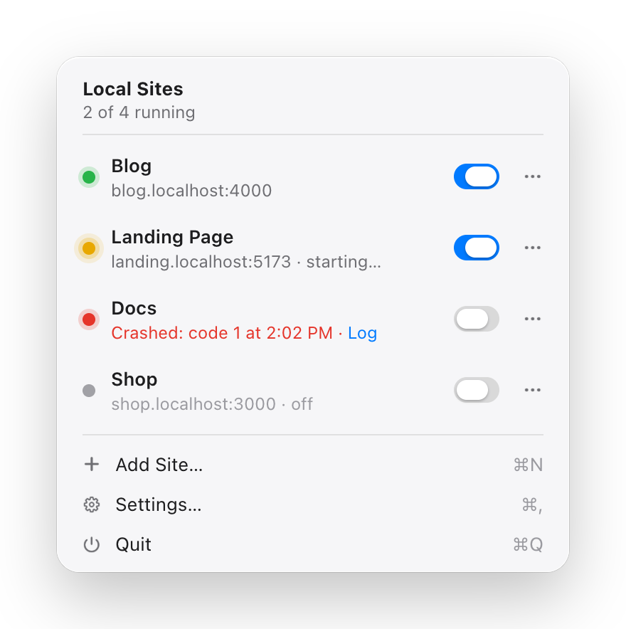

Localhosts
All your dev servers in one menu: which port is whose, start, stop and logs.
No Terminal needed: pick a folder or an HTML file, and the site runs.
Download for Mac
Your local sites, one click away
Add a project folder once. Localhosts fills in the start command and port, and you run it from the menu bar.
Start, stop, open in one click
Turn a site on and Localhosts runs its start command in your login shell. Open it in the browser, restart it or show its folder in Finder.
No Terminal needed
Pick a project folder or a single HTML file, and the site runs. Localhosts serves static files itself, and for dev projects fills in the start command and port.
Every log in one place
The latest 500 lines of each site’s output, warnings and errors highlighted. Copy or clear it in one click.
Busy port? See who holds it
Every site shows its port and status: running, starting or crashed with its exit code. If another program holds the port, you see its name and PID.
Private by design
Localhosts works only with what runs on your Mac. It has no servers of its own.
- Nothing leaves your MacYour sites, commands and logs stay on your computer.
- No accountNothing to sign up for. Install it and add your first site.
- No analytics or trackingLocalhosts doesn’t collect data about you or how you use it.